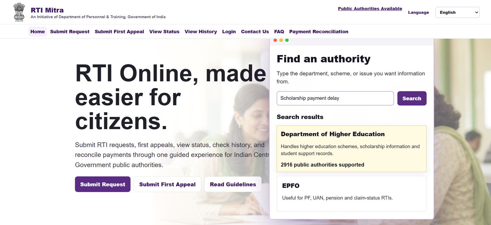

Designing and shipping enterprise-grade GenAI systems end to end.
Generative AILLMsRAGHybrid RetrievalSemantic SearchKnowledge Graphs
Yashaswini R
Building enterprise-grade Generative AI systems AI GeneralistHey, I'm Yashaswini. An AI Engineer building enterprise-grade Generative AI systems - knowledge graphs, hybrid retrieval, and agentic RAG pipelines - end to end. I built a governed enterprise Semantic Layer on Neo4j scaled to 1M+ data points at 5-10s p95 latency, and engineer hybrid retrieval (vector + full-text + graph, RRF-fused, cross-encoder reranked) evaluated against RAGAS quality gates. Outside of work, I independently design and ship full AI products solo - from user research to deployed, multilingual, agentic prototypes.
Designing and shipping enterprise-grade GenAI systems end to end.
Building multi-agent pipelines with planning, execution, and reflection loops.
Transforming enterprise data into governed, queryable knowledge graphs.
Engineering hybrid retrieval and rigorously evaluating quality.
Building robust, production-ready backend systems.
Shipping safe, user-researched AI products solo.
Using AI tools, cloud platforms, and automation workflows to help business users solve problems, build websites, create content, and move faster.
RAG pipelines, knowledge graphs, hybrid retrieval, evaluation, backend APIs, and agentic workflows for enterprise AI use cases.
I use modern AI tools and cloud workflows to automate repetitive work, build websites, generate AI images and videos, edit content, and create fast prototypes for business users.
Applied AI projects across agentic retrieval, public-service product design, and graph-based enterprise intelligence.
resume + job description -> embeddings -> ChromaDB retrieval -> LangGraph agents -> skill gap report
A RAG-based career guidance assistant that analyzes resumes against job descriptions using ChromaDB and Sentence Transformers, running on a locally-hosted LLM (Ollama + Qwen2.5). Built a LangGraph-powered multi-agent pipeline achieving 89% skill-match accuracy with all structured outputs validated against Pydantic schemas.

An AI product researched and designed solo to fix India's broken RTI filing process - authority discovery, confusing forms, payment failures, and first-appeal difficulty. Built Graph RAG-style authority routing over a 2,916-entry public directory, with draft generation, status tracking, and voice input supporting 15+ languages.